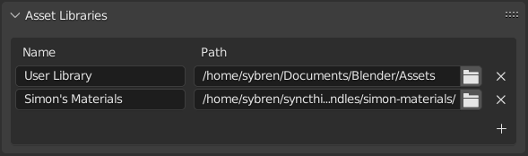
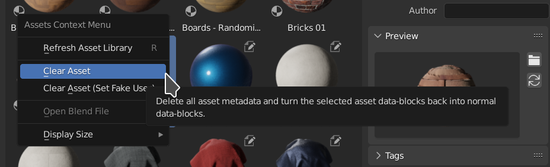

Giới thiệu¶
Phần này mô tả hệ thống asset library của Blender.
Xem thêm
- Asset Browser
Giao diện chính để tổ chức và sử dụng asset.
- Asset Catalog
Dùng để tổ chức asset.
- Pose Library
Được xây dựng trên nền Asset Browser.
Asset là gì?¶
Asset là một data-block mang ý nghĩa.
Blend-file là một cơ sở dữ liệu gồm nhiều Data-Blocks: object, texture, material, v.v. Khi có ý định tái sử dụng hay chia sẻ chúng, dữ liệu cần mang một ý nghĩa. Đây là cái gì? Nó dùng để làm gì? Asset là những data-block được tuyển chọn, dành để tái sử dụng một cách dễ dàng.
Ghi chú
Thuật ngữ chung "asset" thường còn chỉ các loại file khác, như hình ảnh, âm thanh, file video, v.v. Hiện tại những loại này chưa được hỗ trợ như asset trong Blender.
Để biết thêm thông tin, xem Phát triển trong tương lai.
Asset Library là gì?¶
Asset library là một tập hợp các asset của Blender được đăng ký trong Preferences dưới dạng một asset library.
Asset library có thể được lưu cục bộ dưới dạng các thư mục chứa blend-file, hoặc đặt trực tuyến và được tải về khi cần.
Đăng ký nghĩa là bạn đặt cho thư viện một cái tên (như "Sprite Fright") và vị trí trên ổ đĩa (như /home/user/projects/sprite-fright/assets).

Tên và Vị trí của các asset library trong Preferences.¶
Sau khi đăng ký, bạn có thể chọn asset library trong Asset Browser. Tất cả blend-file trong asset library sẽ được quét để tìm asset, và tất cả những asset đó sẽ được hiển thị trong Asset Browser.
Ghi chú
Việc tải một asset library lần đầu có thể mất chút thời gian, nhưng những lần tải sau sẽ nhanh hơn đáng kể. Blender tạo một chỉ mục cho mọi asset có trong asset library, và duy trì nó luôn được cập nhật khi các file bên trong bị sửa đổi. Các chỉ mục này được lưu trong Thư mục cache cục bộ.
Các blend-file có thể nằm trực tiếp trong thư mục cấp cao nhất của asset library, hoặc trong bất kỳ thư mục con nào. Cách tổ chức asset library trên ổ đĩa hoàn toàn tùy thuộc vào bạn. Bất kể asset nằm trong blend-file nào, mỗi asset đều có thể được gán một catalog. Để biết thêm thông tin về cách tổ chức asset theo cách này, xem Asset Catalog.
Asset Library Trực tuyến¶
Bên cạnh các thư mục lưu trên ổ đĩa cục bộ, Blender còn hỗ trợ asset library trực tuyến.
Asset library trực tuyến cung cấp các asset được tải về theo yêu cầu và cache tại máy. Sau khi tải về, asset hoạt động giống như asset từ thư viện cục bộ, tùy theo Import Method đã chọn.
Khác với asset library cục bộ, thư viện trực tuyến được định danh bằng một URL thay vì đường dẫn thư mục, và không đòi hỏi quản lý thủ công các file asset trên đĩa.
Ghi chú
Việc tải asset từ thư viện trực tuyến đòi hỏi Online Access phải được bật trong Preferences.
Cache¶
Các asset đã tải về được lưu trong cache cục bộ của Blender nên chỉ cần tải một lần duy nhất.
Nếu một asset đã được tải về rồi, Blender sẽ dùng lại bản cache thay vì tải lại.
Xem Thư mục cache cục bộ để biết thêm thông tin về vị trí cache.
Mẹo
Quá trình tải có thể bị hủy bằng cách nhấp nút Downloading Asset(s) trong Status Bar.
Hạn chế¶
Asset library trực tuyến có một vài điểm khác biệt so với thư viện cục bộ:
Asset không thể được link trực tiếp mà phải được append hoặc đóng gói (pack).
Nội dung thư viện phụ thuộc vào tình trạng khả dụng của máy chủ từ xa.
Cần có kết nối internet để tải những asset chưa được cache sẵn trong máy.
Các loại Asset¶
Asset có thể được chia thành hai loại lớn: asset primitive và asset preset. Loại nào là loại nào tùy thuộc vào kiểu Data-Blocks.
Asset primitive là các data-block được link hoặc append vào file hiện tại. Ví dụ là object, material và world. Chúng có thể được kéo từ Asset Browser vào scene (object và world), hoặc thả lên các object có sẵn (material).
Asset preset là các data-block được tải lên rồi áp dụng vào một thứ gì đó hoặc được kích hoạt. Một ví dụ là pose asset. Khi áp dụng pose, data-block được tải từ blend-file của nó, sau đó pose được áp lên armature đang hoạt động. Brush asset là ví dụ về loại asset được kích hoạt. Chúng được tải vào file hiện tại và kích hoạt để paint hoặc sculpt, nhưng không được lưu vào file.
Trong tương lai, định nghĩa loại asset sẽ được mở rộng; xem Phát triển trong tương lai để biết thêm thông tin.
Các Asset được hỗ trợ¶
Asset |
Type |
Mô tả |
|---|---|---|
Material |
Primitive |
Một data-block Material có thể được áp dụng lên object. Khi kéo thả lên một object, nó sẽ thay thế material slot. |
Collection |
Primitive |
Collection là một nhóm object có thể được link hoặc append vào scene. Collection duy trì hệ thống phân cấp bên trong của mình và có thể được instanced hoặc dùng để dựng scene theo kiểu module. |
Object |
Primitive |
Một asset Object tiêu chuẩn có thể được kéo thả vào scene. Nó có thể chứa mesh, curve, light hoặc dữ liệu khác. |
Brush |
Preset |
Một asset Brush dùng cho sculpt, texture paint hoặc vertex paint. Khi được kích hoạt, nó trở thành brush hiện tại nhưng không được lưu vĩnh viễn trong file. |
Node Group |
Primitive |
Một asset Node Group có thể được kéo thả vào các node editor tương thích như Geometry Nodes, Shader Editor hay Compositor. Hoạt động như một khối dựng logic node có thể tái sử dụng. |
World |
Primitive |
Một asset World định nghĩa ánh sáng môi trường và nền. Khi kéo thả vào viewport, nó thay thế world hiện tại. Nó cũng có thể được append như một data-block. |
Scene |
Primitive |
Một asset Scene trọn vẹn, bao gồm cả camera, light và các object được link của nó.
|
Pose Action |
Preset |
Một Pose Asset dựa trên data-block Action. Việc áp dụng nó sẽ tải dữ liệu pose và áp lên armature được chọn hoặc đang hoạt động, cập nhật transform của bone mà không làm thay đổi vĩnh viễn action gốc. |
Asset Library của File hiện tại¶
Để giúp quản lý asset trong blend-file hiện tại, bạn có thể đặt Asset Browser hiển thị asset library Current File. Nó luôn hiển thị các asset trong file hiện tại, kể cả khi file hiện tại không được lưu trong asset library nào. Điều này cũng cho phép tạo asset và dùng chúng ngay trong cùng một file, cho những dự án nhỏ chỉ gói trong một file.
Dĩ nhiên, khi blend-file hiện tại là một phần của asset library, bạn cũng có thể thấy asset của nó trong thư viện đó. Các asset nằm trong file hiện tại được đánh dấu bằng một biểu tượng; chỉ những asset đó mới chỉnh sửa được.
Vòng đời của một Asset¶
Phần này mô tả cách tạo, chỉnh sửa, chia sẻ và sử dụng asset.
Tạo một Asset¶
Để tạo một asset, trước tiên hãy tạo ra thứ mà bạn muốn biến thành asset. Tức là tạo object, material, world, hoặc tạo dáng cho nhân vật của bạn. Bước tiếp theo tùy thuộc vào loại asset (xem Các loại Asset ở trên).
Đối với asset primitive, hãy dùng operator Mark as Asset. Nó có thể được tìm thấy trong bộ chọn data-block, trong Outliner, và với object thì trong menu Object của 3D Viewport. Khi dùng Mark as Asset, một bản xem trước tự động sẽ được tạo. Nếu muốn, bạn cũng có thể đổi nó bằng một hình ảnh tự chọn; hãy dùng nút thư mục bên cạnh hình xem trước trong vùng Asset Details của Asset Browser.
Đối với asset preset, mỗi loại asset sẽ có một nút riêng biệt. Ví dụ, với pose có nút Create Pose Asset trong editor Action. Brush asset được tạo bằng cách dùng Duplicate Asset từ các brush asset có sẵn.
Sau khi tạo asset, hãy đảm bảo blend-file hiện tại được lưu trong asset library của bạn. Blender sẽ không tự sao chép asset vào asset library giúp bạn.
Chỉnh sửa Asset¶
Vì asset về bản chất là data-block bình thường, chỉ kèm theo chút metadata, chúng có thể được chỉnh sửa như bất kỳ dữ liệu Blender nào khác. Chỉ cần mở file và chỉnh sửa object, material, world, v.v.
Với asset pose, điều này cũng khả thi. Khi file pose library đang mở, chỉ cần nhấp nút Assign Action để gán pose action cho armature hiện đang được chọn. Sau đó bạn có thể dùng mọi công cụ animation để chỉnh sửa pose, bỏ hoặc thêm key, v.v.
Việc chỉnh sửa metadata của asset có thể được thực hiện qua Asset Browser.
Sử dụng Asset¶
Asset có thể được sử dụng từ Asset Browser.
Pose library mở rộng điều này, và thêm một Asset View vào 3D Viewport. Xem Dùng từ 3D Viewport.
Xóa Asset¶
Metadata của asset có thể bị xóa bằng operator Clear Asset. Operator này có sẵn trong các bộ chọn data-block, trong Asset Browser, và với object thì trong menu của 3D Viewport.

Clear Asset trong Asset Browser.¶
- Clear Asset
Xóa metadata của asset (catalog, mô tả, tác giả, tag), hiệu quả là biến asset trở lại thành một data-block bình thường. Như vậy, các quy tắc xóa cũng áp dụng giống như với data-block khác. Ví dụ, nếu một mesh object vẫn còn được đặt trong scene, Clear Asset sẽ không loại nó khỏi scene. Xem Vòng đời. Bản xem trước sẽ được giữ lại trong data-block và không bị xóa bỏ.
- Clear Asset (Set Fake User)
Thực hiện cùng thao tác như Clear Asset, và sau đó đánh dấu data-block là được bảo vệ. Điều này cho phép data-block không còn được đánh dấu là asset, mà vẫn chắc chắn không bị mất khi lưu blend-file.
Asset đóng kèm¶
Blender đi kèm sẵn nhiều asset, chúng nằm trong thư viện "Essentials".
Có trong thư viện này là:
File hệ thống asset (phần mở rộng .asset.blend)¶
Một số loại asset có thể được chỉnh sửa mà không cần mở blend-file bên trong asset library. Blender lưu các asset này vào thư viện trong những file đặc biệt dùng phần mở rộng .asset.blend. Chúng được quản lý hoàn toàn bởi hệ thống asset của Blender, và chỉ chứa duy nhất một asset cùng các phần phụ thuộc của nó.
Vẫn có thể lưu một file bình thường với phần mở rộng .asset.blend. Khi đó nó sẽ không bị đối xử như file hệ thống asset; Blender phân biệt được sự khác nhau.
File hệ thống asset còn một đặc điểm đặc biệt nữa: bạn có thể mở, nhưng không thể lưu chúng. Operator Save As vẫn có thể được dùng để tạo một file mới từ chúng, và file đó khi đó chỉ là một blend-file bình thường. Như vậy, asset chứa trong đó không thể được chỉnh sửa nếu không mở chính file đó. Blender hiển thị những cảnh báo rõ ràng để truyền đạt rằng file hệ thống asset không thể bị thay đổi và lưu theo cách thông thường.
Lý do những file này đặc biệt là vì hệ thống asset có thể cần tạo lại chúng. Bất kỳ thay đổi bổ sung nào do người dùng thực hiện khi đó đều có thể bị mất. Để ngăn ngừa sự mất dữ liệu này, các file được bảo vệ khỏi sự chỉnh sửa của người dùng.
Hiện tại, chỉ brush asset hỗ trợ tính năng này.
Giới hạn thiết kế¶
Blender không được phép ghi vào blend-file khác ngoài file bạn hiện đang mở, hoặc các file .asset.blend đặc biệt đã giải thích ở trên. Điều này nghĩa là để chỉnh sửa một asset, bạn phải mở blend-file của nó. May thay, điều này chỉ cách một cú nhấp, cả trong vùng Source List của Asset Browser lẫn trong menu ngữ cảnh của asset.
Phát triển trong tương lai¶
Phần này mô tả những hướng phát triển thú vị. Tuy không phải là danh sách đầy đủ, nó có thể giúp hiểu rõ hơn về chức năng hiện tại của Asset Browser của Blender.
Asset không phải Data-Block¶
Các asset ngoài Blender, như file hình ảnh hoặc âm thanh, nhiều khả năng sẽ được hỗ trợ trong một phiên bản tương lai. Với những file như vậy, metadata của asset khi đó sẽ được lưu trong file sidecar XMP, tương tự cách các phần mềm khác cũng đang làm. Các trình import (USD, glTF, FBX, ...) cũng có thể thêm hỗ trợ cho các kiểu file của mình theo cách asset này. Hơn nữa, sẽ có thể làm giàu một asset bằng script Python, vốn có thể cung cấp code để chạy khi asset được sử dụng.
Chỉnh sửa xuyên file¶
Như đã mô tả ở trên, bản thân Blender không được phép ghi vào blend-file khác ngoài file đang mở. Quy tắc này giúp hạn chế độ phức tạp; chẳng hạn, rất khó triển khai một hệ thống hoàn tác đáng tin cậy khi thao tác với file khác. Tuy nhiên, quy tắc này gây cản trở việc cập nhật hàng loạt asset khi chúng được lưu rải rác trong nhiều blend-file.
Vì đã có công cụ có thể thao tác với blend-file bên ngoài bản thân Blender (xem Blender Asset Tracer), nên cũng có thể tạo một công cụ bên ngoài để thực hiện những chỉnh sửa như vậy xuyên nhiều blend-file. Công cụ như thế thậm chí có thể được triển khai qua hệ thống application template của Blender, hoặc như một add-on; quy tắc trên áp dụng cho bản thân Blender, chứ không dành cho các add-on của nó.
Đẩy Asset (Asset Pushing)¶
Ghi chú
Sự ra đời của Brush asset trong Blender 4.3 kèm theo hỗ trợ cho khái niệm đẩy asset (asset pushing) như mô tả ở đây. Khái niệm này có thể được mang đến nhiều loại asset hơn trong tương lai.
Đẩy (pushing) asset là một cách đưa asset vào asset library, khi bạn đang làm việc trên một file và muốn sao chép asset từ file đó vào thư viện. Đây là một khái niệm trông có vẻ đơn giản một cách dễ gây nhầm. Trong một số trường hợp nó thực sự đơn giản, nhưng đủ thường xuyên thì nó khá phức tạp. Ví dụ, khi bạn muốn đẩy một object vào asset library bên ngoài, liệu có nên sao chép luôn cả material không? Còn các hình ảnh texture được những material đó tham chiếu thì sao? Còn những object được tham chiếu bởi custom property, constraint hay modifier thì sao? Và chúng sẽ phải đi vào những file nào? Tất cả bỏ vào một file assets.blend khổng lồ, từng blend-file riêng lẻ, hay mỗi loại asset một thư mục? Blender không nên thay bạn đưa ra những quyết định như vậy.
Đối với những trường hợp cụ thể, tất cả những điều này đều có thể giải quyết được. Vì lý do đó, pose library đã được tạo dưới dạng một add-on được bật theo mặc định. Các studio có nhu cầu riêng có thể tắt add-on và tự triển khai chức năng của riêng mình; các khối dựng nền đều đã nằm trong lõi của Blender, nên không cần sao chép cho việc này. Hơn nữa, add-on có thể ghi vào blend-file khác, nên chúng có thể đưa ra quyết định thay người dùng.
Việc đẩy asset là điều đáng mong đợi. Chính vì những câu hỏi nêu trên, hiện chưa rõ cách triển khai tính năng này sao cho tốt, theo cách vẫn cho phép artist kiểm soát asset của họ.